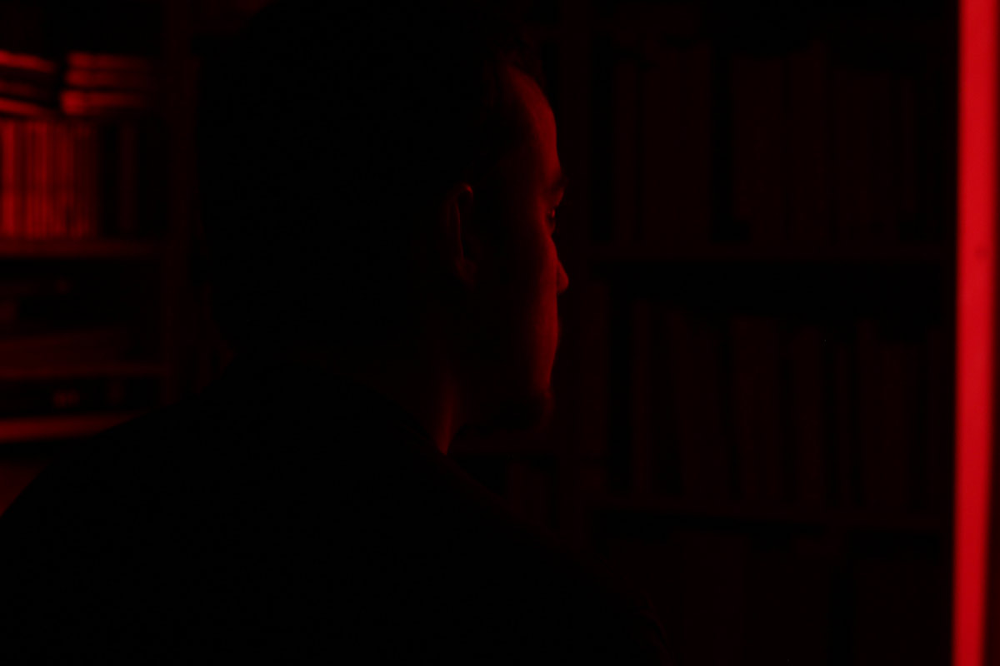
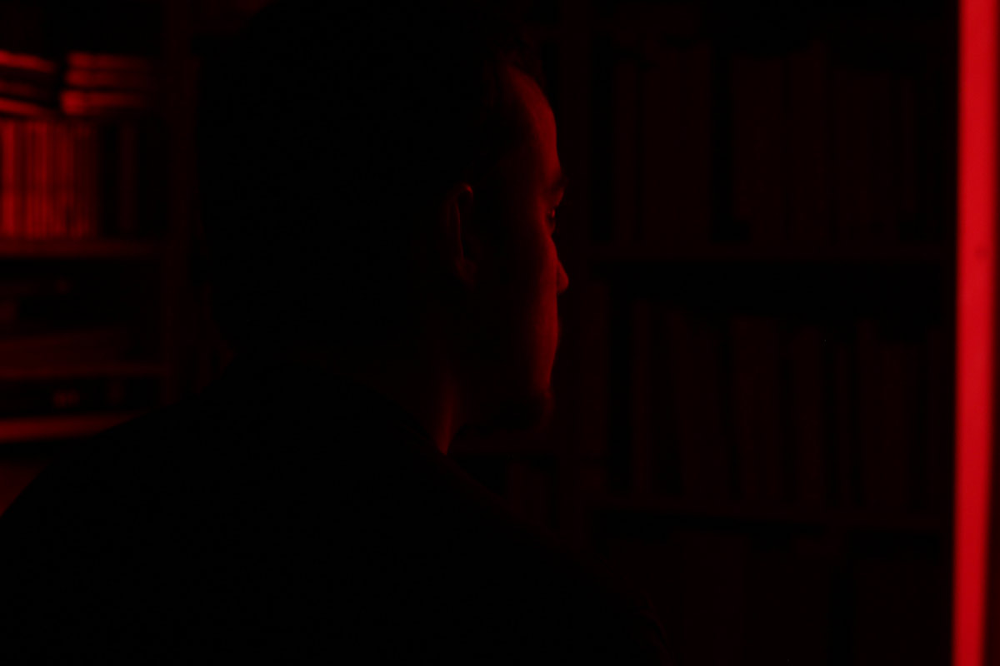

Big Offset
Typography, silkscreen printing, editorial design • 03.2018
Sinestesia
app design, cultural mediation • 2018
Surréalisme
prind design, augmented reality • 01.2018
Body Double
motion design • 09.2017
Let's go - Rone
Processing, virtual reality • 2017
Miscellaneous
2016-2018

 



I also like to take photographs and find myself interested in neon lighting and architecture.